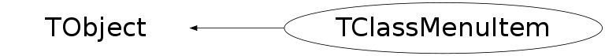

class TClassMenuItem: public TObject
Describes one element of the context menu associated to a class The menu item may describe - a separator, - standard list of methods i.e. the methods defined in the described class by a *MENU* in the comment field of the header, - a method of an external class or a global function All the standard methods of the class are described by only one item. Since a complete context menu is described by a TList of TClassMenuItem elements, it is possible to customize the context menu of a class by removing the element "standard methods" and replacing it by whatever one wants.
Function Members (Methods)
public:
| TClassMenuItem() | |
| TClassMenuItem(Int_t type, TClass* parent, const char* title = "", const char* functionname = "", TObject* obj = 0, const char* args = "", Int_t selfobjposition = -1, Bool_t self = kFALSE) | |
| virtual | ~TClassMenuItem() |
| void | TObject::AbstractMethod(const char* method) const |
| virtual void | TObject::AppendPad(Option_t* option = "") |
| virtual void | TObject::Browse(TBrowser* b) |
| static TClass* | Class() |
| virtual const char* | TObject::ClassName() const |
| virtual void | TObject::Clear(Option_t* = "") |
| virtual TObject* | TObject::Clone(const char* newname = "") const |
| virtual Int_t | TObject::Compare(const TObject* obj) const |
| virtual void | TObject::Copy(TObject& object) const |
| virtual void | TObject::Delete(Option_t* option = "")MENU |
| virtual Int_t | TObject::DistancetoPrimitive(Int_t px, Int_t py) |
| virtual void | TObject::Draw(Option_t* option = "") |
| virtual void | TObject::DrawClass() constMENU |
| virtual TObject* | TObject::DrawClone(Option_t* option = "") constMENU |
| virtual void | TObject::Dump() constMENU |
| virtual void | TObject::Error(const char* method, const char* msgfmt) const |
| virtual void | TObject::Execute(const char* method, const char* params, Int_t* error = 0) |
| virtual void | TObject::Execute(TMethod* method, TObjArray* params, Int_t* error = 0) |
| virtual void | TObject::ExecuteEvent(Int_t event, Int_t px, Int_t py) |
| virtual void | TObject::Fatal(const char* method, const char* msgfmt) const |
| virtual TObject* | TObject::FindObject(const char* name) const |
| virtual TObject* | TObject::FindObject(const TObject* obj) const |
| virtual const char* | GetArgs() const |
| virtual TObject* | GetCalledObject() const |
| virtual Option_t* | TObject::GetDrawOption() const |
| static Long_t | TObject::GetDtorOnly() |
| virtual const char* | GetFunctionName() const |
| virtual const char* | TObject::GetIconName() const |
| virtual const char* | TObject::GetName() const |
| virtual char* | TObject::GetObjectInfo(Int_t px, Int_t py) const |
| static Bool_t | TObject::GetObjectStat() |
| virtual Option_t* | TObject::GetOption() const |
| virtual Int_t | GetSelfObjectPos() const |
| virtual const char* | GetTitle() const |
| virtual Int_t | GetType() const |
| virtual UInt_t | TObject::GetUniqueID() const |
| virtual Bool_t | TObject::HandleTimer(TTimer* timer) |
| virtual ULong_t | TObject::Hash() const |
| virtual void | TObject::Info(const char* method, const char* msgfmt) const |
| virtual Bool_t | TObject::InheritsFrom(const char* classname) const |
| virtual Bool_t | TObject::InheritsFrom(const TClass* cl) const |
| virtual void | TObject::Inspect() constMENU |
| void | TObject::InvertBit(UInt_t f) |
| virtual TClass* | IsA() const |
| virtual Bool_t | IsCallSelf() const |
| virtual Bool_t | TObject::IsEqual(const TObject* obj) const |
| virtual Bool_t | TObject::IsFolder() const |
| Bool_t | TObject::IsOnHeap() const |
| virtual Bool_t | IsSeparator() const |
| virtual Bool_t | TObject::IsSortable() const |
| virtual Bool_t | IsStandardList() const |
| virtual Bool_t | IsToggle() const |
| Bool_t | TObject::IsZombie() const |
| virtual void | TObject::ls(Option_t* option = "") const |
| void | TObject::MayNotUse(const char* method) const |
| virtual Bool_t | TObject::Notify() |
| void | TObject::Obsolete(const char* method, const char* asOfVers, const char* removedFromVers) const |
| static void | TObject::operator delete(void* ptr) |
| static void | TObject::operator delete(void* ptr, void* vp) |
| static void | TObject::operator delete[](void* ptr) |
| static void | TObject::operator delete[](void* ptr, void* vp) |
| void* | TObject::operator new(size_t sz) |
| void* | TObject::operator new(size_t sz, void* vp) |
| void* | TObject::operator new[](size_t sz) |
| void* | TObject::operator new[](size_t sz, void* vp) |
| virtual void | TObject::Paint(Option_t* option = "") |
| virtual void | TObject::Pop() |
| virtual void | TObject::Print(Option_t* option = "") const |
| virtual Int_t | TObject::Read(const char* name) |
| virtual void | TObject::RecursiveRemove(TObject* obj) |
| void | TObject::ResetBit(UInt_t f) |
| virtual void | TObject::SaveAs(const char* filename = "", Option_t* option = "") constMENU |
| virtual void | TObject::SavePrimitive(ostream& out, Option_t* option = "") |
| void | TObject::SetBit(UInt_t f) |
| void | TObject::SetBit(UInt_t f, Bool_t set) |
| virtual void | SetCall(TObject* obj, const char* method, const char* args = "", Int_t selfobjposition = 0) |
| virtual void | TObject::SetDrawOption(Option_t* option = "")MENU |
| static void | TObject::SetDtorOnly(void* obj) |
| static void | TObject::SetObjectStat(Bool_t stat) |
| virtual void | SetSelf(Bool_t self) |
| virtual void | SetTitle(const char* title) |
| virtual void | SetToggle(Bool_t toggle = kTRUE) |
| virtual void | SetType(Int_t type) |
| virtual void | TObject::SetUniqueID(UInt_t uid) |
| virtual void | ShowMembers(TMemberInspector& insp) |
| virtual void | Streamer(TBuffer& b) |
| void | StreamerNVirtual(TBuffer& b) |
| virtual void | TObject::SysError(const char* method, const char* msgfmt) const |
| Bool_t | TObject::TestBit(UInt_t f) const |
| Int_t | TObject::TestBits(UInt_t f) const |
| virtual void | TObject::UseCurrentStyle() |
| virtual void | TObject::Warning(const char* method, const char* msgfmt) const |
| virtual Int_t | TObject::Write(const char* name = 0, Int_t option = 0, Int_t bufsize = 0) |
| virtual Int_t | TObject::Write(const char* name = 0, Int_t option = 0, Int_t bufsize = 0) const |
protected:
| TClassMenuItem(const TClassMenuItem&) | |
| virtual void | TObject::DoError(int level, const char* location, const char* fmt, va_list va) const |
| void | TObject::MakeZombie() |
| TClassMenuItem& | operator=(const TClassMenuItem&) |
Data Members
public:
| enum EClassMenuItemType { | kPopupUserFunction | |
| kPopupSeparator | ||
| kPopupStandardList | ||
| }; | ||
| enum { | kIsExternal | |
| kIsSelf | ||
| }; | ||
| enum TObject::EStatusBits { | kCanDelete | |
| kMustCleanup | ||
| kObjInCanvas | ||
| kIsReferenced | ||
| kHasUUID | ||
| kCannotPick | ||
| kNoContextMenu | ||
| kInvalidObject | ||
| }; | ||
| enum TObject::[unnamed] { | kIsOnHeap | |
| kNotDeleted | ||
| kZombie | ||
| kBitMask | ||
| kSingleKey | ||
| kOverwrite | ||
| kWriteDelete | ||
| }; |
private:
| TString | fArgs | arguments type list *** NOT CHECKED *** |
| TObject* | fCalledObject | object to be called |
| TString | fFunctionName | name of the function or method to be called |
| TClass* | fParent | parent class |
| Bool_t | fSelf | flag to indicate that object to be called is the selected one |
| Int_t | fSelfObjectPos | rang in argument list corresponding to the object being clicked on |
| TList* | fSubMenu | list of submenu items |
| TString | fTitle | title if not standard |
| Bool_t | fToggle | flag toggle method |
| TClassMenuItem::EClassMenuItemType | fType | type flag (EClassMenuItemType) |
Class Charts
{kind=link}
{kind=link}
{kind=link}
{kind=link}

Function documentation
TClassMenuItem()
Default TClassMenuItem ctor. TClassMenuItems are constructed in TClass with a standard content but may be customized later fType = 0 : external method/function fType = 1 : separator fType = 2 : standard methods list
TClassMenuItem(Int_t type, TClass* parent, const char* title = "", const char* functionname = "", TObject* obj = 0, const char* args = "", Int_t selfobjposition = -1, Bool_t self = kFALSE)
TClassMenuItem ctor. TClassMenuItems are constructed in TClass with a standard content but may be customized later type = 0 : external method/function type = 1 : separator type = 2 : standard methods list self indicates if the object to be called is the one selected by the popup menu selfobjposition, if non zero, indicates the position in the arguments list of the argument corresponding to the selected (clicked) object. This argument in the calling method should be a TObject* Note: It is the responsability of the caller/creator to add to to the menu list.
TClassMenuItem(const TClassMenuItem& )
copy constructor Note: It is the responsability of the caller/creator to add to to the menu list.
TClassMenuItem& operator=(const TClassMenuItem& )
assignement operator Note: It is the responsability of the caller/creator to add to to the menu list.